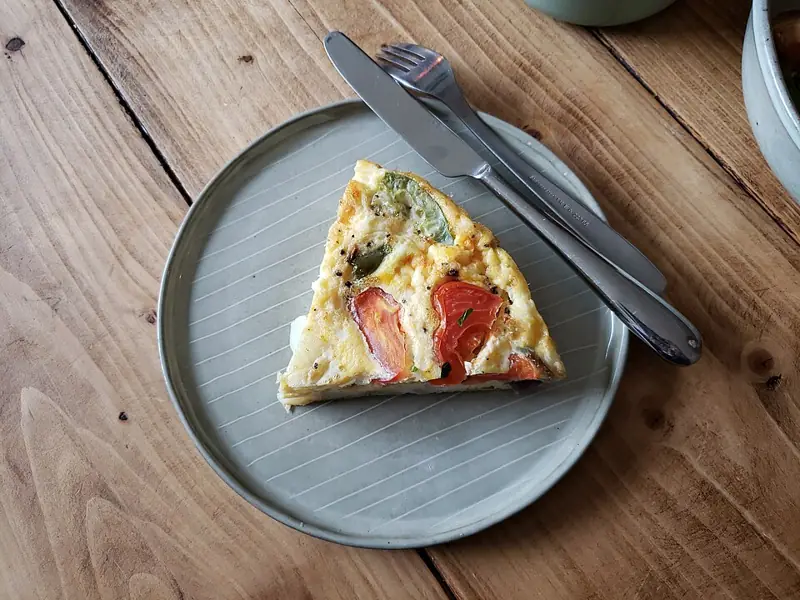

Фото: Andy Li, CC0

Сырный омлет-фриттата
Толстый омлет с сыром и овощами, доведённый в духовке
25 мин3 порц.354 ккал на порциюБ 24 · Ж 27 · У 3Итальянская кухня
Продукты на 3 порц.
- Яйцо куриное6 шт
- Молоко4 ст. л.
- Сыр твёрдый100 г
- Помидоры1 шт
- Перец болгарский по желанию1 шт
- Зелёный лук по желанию15 г
- Оливковое масло1 ст. л.
- Соль2 щеп.
- Перец чёрный молотый1 щеп.
Как готовить
- Разогрейте духовку до 180 °C (средний жар).
- Перец нарежьте полосками, помидор кружками, сыр натрите.
- Взбейте яйца с молоком, солью и перцем, вмешайте половину сыра.
- В сковороде с металлической ручкой разогрейте масло на среднем огне, обжарьте перец 3 минуты.
- Влейте яйца, разложите сверху помидоры, посыпьте оставшимся сыром. Жарьте 3-4 минуты, пока края не схватятся.
- Переставьте сковороду в духовку на 10-12 минут. Фриттата готова, когда центр не дрожит, а сыр подрумянился.
Совет. Если ручка у сковороды пластиковая, накройте крышкой и доведите на слабом огне 8-10 минут. Подходит для остатков овощей и колбасы.